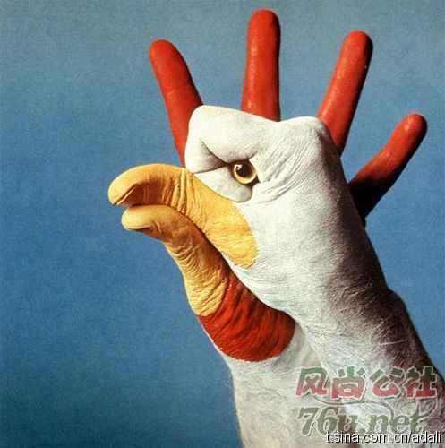

回复@陈加兴:你养过的家禽很神勇，我曾记得的是邻居家一只公鸡，喜欢啄小孩子，每次见了它，我都哭爹叫娘的。 //@陈加兴:鸡鸭鹅都养过啊，而且鸡还很聪明，在阳台上轻轻地发出特殊的声音它们就会跑过来等吃的，晚上只要人一赶就自觉上四楼回家 更叫绝的是某年我家打死一只耗子，生擒一窝眼睛都没@Ada李力:今天在香山东门外，四个小朋友激动地跑向一个栅栏边，说要看动物。我跟过去，看到了一群散养的鸡。这些小朋友哪有我们小时候的福气，那时家家院子里都养过家禽，觉得鸡就是鸡，动物是指关在动物园里的那些生物。 